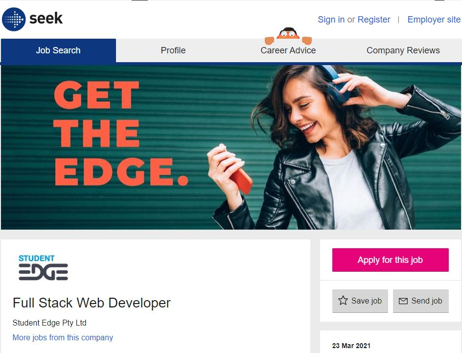
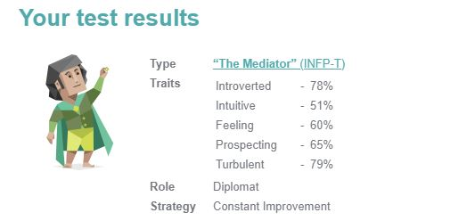
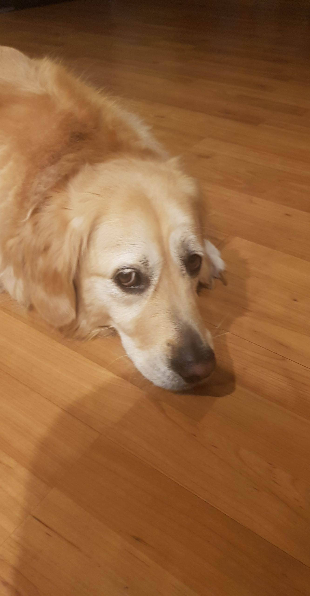
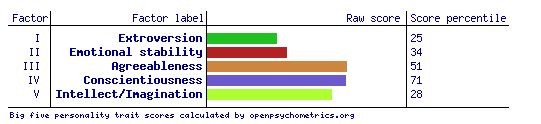
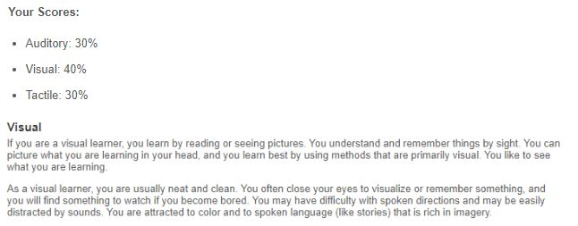

My name is Kaylyn Tran (some know me as kayoh), my student number is s3900610, and my student email is s3900610@student.rmit.edu.au. I’m part Chinese and part Vietnamese, from my dad’s side and mum’s side respectively, but I was born and raised in Australia, Melbourne, and I am pretty awful at speaking anything but English. I do hope to learn Japanese though. I have never lived outside of Melbourne, and I'm glad since Melbourne is the best city. On top of this, the only two places I have travelled to outside of Victoria are New South Wales, to visit my cousins, and New Zealand, for a holiday in grade 5, meaning I have only gone overseas once in my life. I’ve completed 14 years of education, from kindergarten to year 12, and completed VCE in 2020, which was a horrible time to be doing year 12 VCE, since it was almost all online learning, which is terrible for high school in my opinion. Despite this, I still got through economics and legal studies without completely losing my mind.
My hobbies consist of playing games and consuming a large amount of media, being movies, TV shows, anime, manga, manhwa, YouTube and music. Although, I don’t entirely consider these as hobbies because I spend a majority of my time on these things, which is bad but I’m pretty much listening to music all the time, and if I’m not, then i’m watching an anime from start to finish in one sitting. One thing people may not know about me, since I've been pretty discrete about this until recently, is that I play a first person shooter game called Counter Strike: Global Offensive competitively at a professional level. Although I’m not paid to play right now, I play in the same leagues as the best teams in Australia. E-sports, more specifically CS:GO, is definitely my passion but it does take up a lot of time to be able to compete with the best. As well as playing CS:GO competitively, I also make montages of my plays, and I do play games casually, like other FPS games, LoL, some single player games and party games with my friends. I also have a beautiful golden retriever named Maya, and she’s about 6 years old.
My interest in IT may be unique in the sense that it’s not exactly a passion or what I knew I wanted to pursue in life. However, I do have an interest in IT. Although I’m not a particularly creative person, my interest in IT would be more of the creative side, with the aim to eventually create my own unique project. My interest in IT started when my friend showed me Michael Reeves videos. Even though I didn’t pay much attention to what the process actually consisted of, I found great entertainment in his videos, and found it fascinating and somewhat inspiring how much fun he was having creating these really ‘unique’ project ideas he came up with, and how much of a blast the end result could be, even if it was an extremely simple outcome. After my friend showed me his energy drink robot video, I proceeded to watch every one of Michael Reeves’ videos with him. As a person who lacked any passion for any pathway, IT was definitely one of the first pathways I took an interest in. Aside from this, I have no real IT experience, apart from the fact that I have been around computers and technology in general since I was a kid, and pretty much learnt how to use a computer efficiently by myself. Although I'm not well versed in the subject, I do believe I am more knowledgeable than the average person, which led me to pursue IT.
To be completely honest, IT wasn’t even originally on my university preference list. I’d convinced myself that I was set on either law, economics or teaching, and I’d probably still like to do teaching. However, with some help from my brother who also goes to RMIT, I found out that RMIT offered a wide range of courses that are pretty easy to get into, and the location was extremely convenient. On top of this, my indecisive self decided that I no longer wanted to pursue the same things. After deciding on some courses from RMIT based on enjoyability, previous experiences, and employability, I added them to my preference list, and was immediately offered to study the Bachelor of IT.
During my studies and by the end of the course, I expect to learn how to create, design, and troubleshoot websites and applications which will allow independent work, as well as the skills to manage networks and databases to potentially work in a group / team in a business or even schools.
As of now, my ideal job would be web development for a company related to high school or esports.

To be a web developer, to me at least, is to act as a crucial role in creating and frequently maintaining websites, which would include making the website look amazing as well as appealing to the intended user’s experience. This means that a web developer doesn’t just stop once the website is done, but is constantly working to ensure that the website is always improving, by listening to both company and user feedback. What makes web development appealing to me is the fact that web development can be a fairly independent job, as opposed to working in large groups where employees need to constantly bounce off of one another. Although I am more than capable of working in a team, I find that I work at my best when I am doing things on my own. As to why the company should be related to high school or esports; this is because as someone directly involved in the Australian esports scene and an Australian high school student for a full 6 years, I found that websites I’d frequently visit for all my esports and student needs were not developed very well. This is why I’d like to pursue web development working in these fields, as I would like to help people like me, who found great trouble in their frequently visited websites.
For this particular ‘Full Stack Web Developer’ position, ‘full stack’ meaning front and end or the entirety, the applicant needs a minimum 3-5 years of experience as a full-stack developer, fluency in multiple coding languages; specifically C#, ASP.NET and JavaScript / TypeScript; a tertiary qualification in an information technology-related course, experience and a high ability in working with a team, analytical and problem-solving skills, good communication skills and attributes such as creativity, passion and high attention to detail. However, as of now, I would be a long way off of that. I currently have no prior experience in the field as well as working with a team, I only have minimal knowledge in HTML and Python coding and I am at the beginning of my Bachelor of IT. However, I do have the important attributes, being analytical and problem-solving skills, good communication skills, creativity, passion and good attention to detail.
The way I plan to acquire all the skills, qualifications and experience needed is by completing my Bachelor of IT for starters. I plan to pursue the major stream ‘web and mobile computing’. As I currently am and plan to continue studying full-time, this should ideally take 3 years. This is counting on no deferrals and nothing significant causing delays in my full-time study. Without any break, once I complete my Bachelor of IT, I will begin advertising myself on the market as a young, passionate and motivated IT graduate, hopefully looking for a web development job for a small-medium sized company. This would be to gain the needed experience to pursue web development for larger companies in the esports or high school industries. After gaining 3-5 years of experience as a smaller web developer, I’d look to apply for a larger, full-stack web development role, for a company like Student Edge, as shown above.
Myers-Briggs Personality Test
 Big Five Personality Test
Learning Style Test

The results of these tests show that I am introverted and emotional, but I am also friendly, optimistic, careful, organised, intuitive and agreeable. To me, this means that although I am not very outgoing and quite introverted, given some time I will also be easy to get along with and become a very valuable team member in a business situation, due to these multiple factors. I believe I am also individually important to a business as my main strategy is ‘constant improvement’ meaning I am always striving to improve, which is a good investment for a business in terms of employees, and I can easily learn visually and through the assessment of another’s experiences. Taking these into account, when forming a team, I would most likely be less valuable as a leader role, and I’d be more valuable as a core member of a team or as an individual working on a separate project. However, these results are to be taken with a grain of salt from a business’ perspective. For example, I agree that I am an emotional person, but not in a business situation, meaning that this should not be considered as a hindrance in the eyes of a business. As well as this, I personally think I am just as much a tactile learner as I am a visual learner, and less of an auditory learner, leaving the impression that these results may be slightly inaccurate.
My project idea will be called MyKayList. It will aim to be a database website and community that allows people to create lists to track their media. It will be similar to sites like MyAnimeList and AniList, but the difference is that the database will include many types of media, consisting of: English TV shows and movies, anime and anime movies, Korean dramas, comics, manga, light novels, Korean Manhwa and Chinese manhua. The database will also have a feature to sync / connect with streaming sites such as Animelab and Netflix, which will allow the database to auto-update personal lists.
The reason I picked this as my project idea is because this is exactly what I have been longing for, as well as many of my friends. The idea of a huge multimedia database has also been mentioned greatly by lots of online communities, as this does not exist anywhere at all. Not only will this project reach a wider demographic due to including many types of media, but this will also fill a hole in its particular market.
The database for this website will be extremely large. For each form of media I intend to include: the type of media, a synopsis, the studio, producers, alternative titles, airing times and dates (will convert to the user’s timezone), licensors, the source materials, rating, duration (per ep.), prequels, sequels and any media related to its world/universe, characters and their voice actors, original soundtracks / music included, its rating, the number of people who have added it to their list, and will have a trailer preview on the page.
The website’s main purpose is for users to have three lists: animation, novels/graphical, and live action. Users will be able to add their media of choice into these lists, and sort them by: planning to watch or read, currently watching or reading, dropped, currently on hold and watched/read. Users will then be able to interact with the media on their list, allowing them to update their progress, add a start date and end date, and also rate the media a certain score. The scoring will be from 0 - 10 and will scale by 0.1, allowing users to enter a more precise custom score, as opposed to the common 1, 2, 3, etc. There will also be a rewatch / reread option, as well as custom tags where users can leave a personal note on specific media in their list. Although this format is similar to sites like Anilist, MyAnimeList and others, the big difference lies in the size and variety of the media database.
MyKayList will have a sync / connect feature where their MyKayList can sync with streaming websites. This will create opportunities for users to select if they’d like their list to auto update as they’re watching / reading media. MyKayList will look to be able to sync with Netflix, AnimeLab, Crunchyroll, Shonen Jump, Book Walker and Stan.
The final large component of the website will be a community forum component. All users will have a profile up for display to the public, which will show the user’s watch / read time in days. Under the user’s watch / read time, it will also display the user’s statistics involving their three lists. The website will feature a section for news related to media, for example, a new season of a show being announced, and a forum. The forum will allow users to create discussion threads within discussion categories and interact with each other on these forums. Users will also be able to add each other on MyKayList. This social / community aspect will be a very important part of MyKayList, as people enjoy this type of aspect on database sites.
To make MyKayList I will need two main tools. For the database, I will be using SQLite and later on moving to different programs with larger database capacities. This will help to create and organise the database for MyKayList and will include all the data involving the media that will allow them to be added to users’ lists. The database will be regularly updated by users themselves. For the website, I will be using GitHub in the early stages combined with a custom template, and transitioning to a tool like SquareSpace for ease of access in the later stages.
The main skills required for this project would be a depth of knowledge in HTML and CSS coding to write and format the website itself. The other major skill that would be required is a deep understanding on how to use SQLite and other database tools in the most fast and efficient way possible. These skills will be easy to develop within a realistic timeframe, as these should be achieved by the end of my bachelor of IT.
If the project were to be completed to a high standard, the site would likely be successful. The site will be advertised on medium sized online communities who share the same wish for a website like MyKayList. As media-themed online communities are quite tight-knit, word of mouth should spread fairly quickly, and across multiple demographics. This will fulfill the majority’s wishes for a large multimedia database such as the website MyKayList will become.